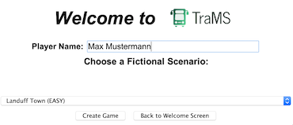

Creating a new game in TraMS is possible by clicking on "New Game" from the TraMS Welcome Screen or clicking File > New Game from the menu bar. The New Game screen (shown above) will be displayed. On this screen, you should enter your name in the box beside player name. In the 2nd Preview Edition, the Landuff Scenario is the only scenario available. Consequently, click the "Create Game" button to continue. Alternatively, you can go back to the Welcome Screen by clicking on the "Back to Welcome Screen" button.
The scenario screen gives you information about initial funding and targets for the scenario. Please read the information carefully and then click "Continue" to move to the management screen.